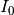
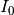
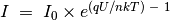
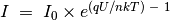
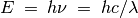
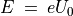
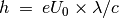

Caractéristique U-I d’une diode¶
Objectif
Tracer la caractéristique U-I d’une diode et comparer les résultats avec la théorie.
Procédure


- Faire les connexions
- Cliquer sur DÉMARRER pour tracer la courbe caractéristique.
- Analyser les données
- Tracer les courbes U-I de DELs
Discussion
La caractéristique U-I d’une jonction PN idéale est donnée par
l’équation
 , où
 est le courant de saturation inverse,
, où
 est le courant de saturation inverse,  la charge de
l’électron,
la charge de
l’électron,  la constante de Boltzmann,
la constante de Boltzmann,  la température en Kelvin.
Pour une diode réelle, non-idéale, l’équation est
, où
la température en Kelvin.
Pour une diode réelle, non-idéale, l’équation est
, où  est le facteur d’idéalité, qui vaut 1 pour une diode idéale. Pour des
diodes réelles il varie entre 1 et 2. On a utilisé une diode au silicium
1N4148. La valeur de n pour 1N4148 est proche de 2. On a calculé la
valeur de en modélisant les valeurs expérimentales par l’équation.
est le facteur d’idéalité, qui vaut 1 pour une diode idéale. Pour des
diodes réelles il varie entre 1 et 2. On a utilisé une diode au silicium
1N4148. La valeur de n pour 1N4148 est proche de 2. On a calculé la
valeur de en modélisant les valeurs expérimentales par l’équation.
La tension à laquelle une DEL commence à émettre de la lumière dépend de
sa longueur d’onde et de la constante de Planck. L’énergie d’un photon
est donnée par . Cette énergie est égale au
travail d’un électron qui franchit un seuil de potentiel, qui est donné
par . Donc la constante de Planck est
, où  est la longueur d’onde de la
DEL, la charge de l’électron et
est la longueur d’onde de la
DEL, la charge de l’électron et  la vitesse de la lumière.
la vitesse de la lumière.
Recommencer cette expérience en chauffant la diode à différentes températures.